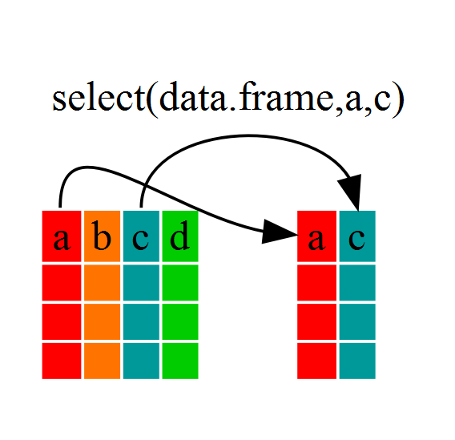

7 Data Frame Basics
7.1 Overview
It is often said that 80% of data analysis is spent on the process of cleaning and preparing the data. (Dasu and Johnson, 2003)
Thus before you can even get to doing any sort of sophisticated analysis or plotting, you’ll generally first need to do some of the following tasks:
- Manipulating data frames, e.g., filtering, summarizing, and conducting calculations across groups.
- Tidying data into the appropriate format
There are two competing schools of thought within the R community.
We should stick to the base R functions to do manipulating and tidying;
tidyverseuses syntax that’s unlike base R and is superfluous.We should start teaching students to manipulate data using
tidyversetools because they are straight-forward to use, more readable than base R, and speed up the tidying process.
I’ll introduce you to the tidyverse tools. If your R tasks are data analysis, plotting, modeling and statistics, you can accomplish most of what you need using the tidyverse. Tidyverse also often has helpful error messages.
The tidyverse is an opinionated collection of R packages designed for data science. All packages share an underlying design philosophy, grammar, and data structures.
Jasmine’s view: I use both base R and tidyverse, but will prefer tidyverse if I need to do more than ~3 operations on a dataset. The tidyverse is a major reason why R is so popular for data analysis, and many people that mainly work in python will sometimes switch to R just for data cleaning & plotting.
Michael’s view: I prefer tidyverse for manipulating, tidying, and plotting data. I find it easier to understand and use because of its unified design philosophy, which lets me write solutions to my coding tasks faster. I still use base R for coding (it’s impossible not to), but when there’s an equivalent base R or tidyverse function, I’ll use the latter 99% of the time. The one place I sometimes flip this heuristic is when developing R packages—here it can make sense to stick to base R, but it depends on what you’re doing.
7.2 Data frame refresher
Earlier, we saw the Theoph data set, a data frame describing theophylline PK in 12 distinct subjects.
theophylline <- datasets::Theoph
theophylline
#> # A tibble: 132 × 5
#> Subject Wt Dose Time conc
#> <ord> <dbl> <dbl> <dbl> <dbl>
#> 1 1 79.6 4.02 0 0.74
#> 2 1 79.6 4.02 0.25 2.84
#> 3 1 79.6 4.02 0.57 6.57
#> 4 1 79.6 4.02 1.12 10.5
#> 5 1 79.6 4.02 2.02 9.66
#> 6 1 79.6 4.02 3.82 8.58
#> 7 1 79.6 4.02 5.1 8.36
#> 8 1 79.6 4.02 7.03 7.47
#> 9 1 79.6 4.02 9.05 6.89
#> 10 1 79.6 4.02 12.1 5.94
#> # ℹ 122 more rowsA data frame is a type of object that organizes data into rows and columns.
R has a lot of basic functions for describing data frames:
## Look at part of the data
head(theophylline) # first few lines)
#> # A tibble: 6 × 5
#> Subject Wt Dose Time conc
#> <ord> <dbl> <dbl> <dbl> <dbl>
#> 1 1 79.6 4.02 0 0.74
#> 2 1 79.6 4.02 0.25 2.84
#> 3 1 79.6 4.02 0.57 6.57
#> 4 1 79.6 4.02 1.12 10.5
#> 5 1 79.6 4.02 2.02 9.66
#> 6 1 79.6 4.02 3.82 8.58
tail(theophylline) # last few lines
#> # A tibble: 6 × 5
#> Subject Wt Dose Time conc
#> <ord> <dbl> <dbl> <dbl> <dbl>
#> 1 12 60.5 5.3 3.52 9.75
#> 2 12 60.5 5.3 5.07 8.57
#> 3 12 60.5 5.3 7.07 6.59
#> 4 12 60.5 5.3 9.03 6.11
#> 5 12 60.5 5.3 12.0 4.57
#> 6 12 60.5 5.3 24.2 1.17
dim(theophylline) # dimensions
#> [1] 132 5
nrow(theophylline) # number of rows
#> [1] 132
summary(theophylline) # basic info about each column
#> Subject Wt Dose Time
#> 6 :11 Min. :54.60 Min. :3.100 Min. : 0.000
#> 7 :11 1st Qu.:63.58 1st Qu.:4.305 1st Qu.: 0.595
#> 8 :11 Median :70.50 Median :4.530 Median : 3.530
#> 11 :11 Mean :69.58 Mean :4.626 Mean : 5.895
#> 3 :11 3rd Qu.:74.42 3rd Qu.:5.037 3rd Qu.: 9.000
#> 2 :11 Max. :86.40 Max. :5.860 Max. :24.650
#> (Other):66
#> conc
#> Min. : 0.000
#> 1st Qu.: 2.877
#> Median : 5.275
#> Mean : 4.960
#> 3rd Qu.: 7.140
#> Max. :11.400
#>
View(theophylline) # the whole shebang (avoid with very large datasets)
#> Warning in View(theophylline): unable to open display
#> Error in `.External2()`:
#> ! unable to start data viewerWe can access the data in a data frame by indexing:
# The whole first row
theophylline[1,]
#> # A tibble: 1 × 5
#> Subject Wt Dose Time conc
#> <ord> <dbl> <dbl> <dbl> <dbl>
#> 1 1 79.6 4.02 0 0.74
# The whole first column, numeric index
theophylline[,1] # when it's just one column, R turns it into a vector
#> [1] 1 1 1 1 1 1 1 1 1 1 1 2 2 2 2 2 2 2 2 2 2 2 3 3
#> [25] 3 3 3 3 3 3 3 3 3 4 4 4 4 4 4 4 4 4 4 4 5 5 5 5
#> [49] 5 5 5 5 5 5 5 6 6 6 6 6 6 6 6 6 6 6 7 7 7 7 7 7
#> [73] 7 7 7 7 7 8 8 8 8 8 8 8 8 8 8 8 9 9 9 9 9 9 9 9
#> [97] 9 9 9 10 10 10 10 10 10 10 10 10 10 10 11 11 11 11 11 11 11 11 11 11
#> [121] 11 12 12 12 12 12 12 12 12 12 12 12
#> Levels: 6 < 7 < 8 < 11 < 3 < 2 < 4 < 9 < 12 < 10 < 1 < 5
# The whole first column, character vector
theophylline[, "Subject"]
#> [1] 1 1 1 1 1 1 1 1 1 1 1 2 2 2 2 2 2 2 2 2 2 2 3 3
#> [25] 3 3 3 3 3 3 3 3 3 4 4 4 4 4 4 4 4 4 4 4 5 5 5 5
#> [49] 5 5 5 5 5 5 5 6 6 6 6 6 6 6 6 6 6 6 7 7 7 7 7 7
#> [73] 7 7 7 7 7 8 8 8 8 8 8 8 8 8 8 8 9 9 9 9 9 9 9 9
#> [97] 9 9 9 10 10 10 10 10 10 10 10 10 10 10 11 11 11 11 11 11 11 11 11 11
#> [121] 11 12 12 12 12 12 12 12 12 12 12 12
#> Levels: 6 < 7 < 8 < 11 < 3 < 2 < 4 < 9 < 12 < 10 < 1 < 5
# Two columns, character vector
theophylline[, c("Subject", "Wt")] # with two columns, it stays a data frame
#> # A tibble: 132 × 2
#> Subject Wt
#> <ord> <dbl>
#> 1 1 79.6
#> 2 1 79.6
#> 3 1 79.6
#> 4 1 79.6
#> 5 1 79.6
#> 6 1 79.6
#> 7 1 79.6
#> 8 1 79.6
#> 9 1 79.6
#> 10 1 79.6
#> # ℹ 122 more rowsWe can also refer to individual columns (as vectors) using dollar sign notation or double square brackets:
# Select a column by name, dollar notation:
theophylline$Subject # no quotes!
#> [1] 1 1 1 1 1 1 1 1 1 1 1 2 2 2 2 2 2 2 2 2 2 2 3 3
#> [25] 3 3 3 3 3 3 3 3 3 4 4 4 4 4 4 4 4 4 4 4 5 5 5 5
#> [49] 5 5 5 5 5 5 5 6 6 6 6 6 6 6 6 6 6 6 7 7 7 7 7 7
#> [73] 7 7 7 7 7 8 8 8 8 8 8 8 8 8 8 8 9 9 9 9 9 9 9 9
#> [97] 9 9 9 10 10 10 10 10 10 10 10 10 10 10 11 11 11 11 11 11 11 11 11 11
#> [121] 11 12 12 12 12 12 12 12 12 12 12 12
#> Levels: 6 < 7 < 8 < 11 < 3 < 2 < 4 < 9 < 12 < 10 < 1 < 5
# Select a column by name, square bracket notation:
theophylline[["Subject"]]
#> [1] 1 1 1 1 1 1 1 1 1 1 1 2 2 2 2 2 2 2 2 2 2 2 3 3
#> [25] 3 3 3 3 3 3 3 3 3 4 4 4 4 4 4 4 4 4 4 4 5 5 5 5
#> [49] 5 5 5 5 5 5 5 6 6 6 6 6 6 6 6 6 6 6 7 7 7 7 7 7
#> [73] 7 7 7 7 7 8 8 8 8 8 8 8 8 8 8 8 9 9 9 9 9 9 9 9
#> [97] 9 9 9 10 10 10 10 10 10 10 10 10 10 10 11 11 11 11 11 11 11 11 11 11
#> [121] 11 12 12 12 12 12 12 12 12 12 12 12
#> Levels: 6 < 7 < 8 < 11 < 3 < 2 < 4 < 9 < 12 < 10 < 1 < 5
# With a single bracket, it stays a data frame
theophylline["Subject"]
#> # A tibble: 132 × 1
#> Subject
#> <ord>
#> 1 1
#> 2 1
#> 3 1
#> 4 1
#> 5 1
#> 6 1
#> 7 1
#> 8 1
#> 9 1
#> 10 1
#> # ℹ 122 more rowsSimilarly, we can modify the data in a data frame.
theophylline$Subject <- paste0("Subject ", theophylline$Subject)
theophylline
#> # A tibble: 132 × 5
#> Subject Wt Dose Time conc
#> <chr> <dbl> <dbl> <dbl> <dbl>
#> 1 Subject 1 79.6 4.02 0 0.74
#> 2 Subject 1 79.6 4.02 0.25 2.84
#> 3 Subject 1 79.6 4.02 0.57 6.57
#> 4 Subject 1 79.6 4.02 1.12 10.5
#> 5 Subject 1 79.6 4.02 2.02 9.66
#> 6 Subject 1 79.6 4.02 3.82 8.58
#> 7 Subject 1 79.6 4.02 5.1 8.36
#> 8 Subject 1 79.6 4.02 7.03 7.47
#> 9 Subject 1 79.6 4.02 9.05 6.89
#> 10 Subject 1 79.6 4.02 12.1 5.94
#> # ℹ 122 more rows7.3 Data frame manipulation using dplyr
The dplyr package provides a number of very useful functions for manipulating data frames. Code written with dplyr is often easier to read than code written in “base R”.
We’re going to learn how to subset data frames: how do we filter for the rows we want? How do we select the columns we want?
# If you haven't yet installed dplyr, install it now!
# install.packages("dplyr")
library(dplyr)7.3.1 dplyr::select
Imagine that we just received the airquality data set, but are only interested in a few variables in it. We could use the select() function to keep only the columns corresponding to variables we select.
Let’s take a look at the help documentation for select:
?dplyr::selectThe arguments for select are:
.datathis is a data frame, and this is always the first argument for all tidyverse data frame manipulation functions...this is a place holder for any number of other arguments that can optionally be passed on.selectis expecting the names (unquoted) of the columns you would like to keep or extract.
# Select the month, day and temperature columns from the air quality data set
select(airquality, Month, Day, Temp)
#> # A tibble: 153 × 3
#> Month Day Temp
#> <int> <int> <int>
#> 1 5 1 67
#> 2 5 2 72
#> 3 5 3 74
#> 4 5 4 62
#> 5 5 5 56
#> 6 5 6 66
#> 7 5 7 65
#> 8 5 8 59
#> 9 5 9 61
#> 10 5 10 69
#> # ℹ 143 more rows
Our new data frame only contains three columns: Month, Day, Temperature.
This is equivalent to the base R subsetting function we saw before:
airquality[, c("Month", "Day", "Temp")]
#> # A tibble: 153 × 3
#> Month Day Temp
#> <int> <int> <int>
#> 1 5 1 67
#> 2 5 2 72
#> 3 5 3 74
#> 4 5 4 62
#> 5 5 5 56
#> 6 5 6 66
#> 7 5 7 65
#> 8 5 8 59
#> 9 5 9 61
#> 10 5 10 69
#> # ℹ 143 more rows7.3.2 dplyr::filter
Now let’s say we’re only interested in the month of June. We can use filter to select only the rows where month is 6.
?dplyr::filterfilter works on rows while select works on columns
filter expects a logical expression, and will keep all rows where that logical expression evaluates as TRUE.
7.4 Combining dplyr operations
What if we wanted only the temperature and day of data points in June?
airquality_june <- filter(airquality, Month == 6)
airquality_june_small <- select(airquality_june, Day, Temp)
nrow(airquality_june_small)
#> [1] 30
ncol(airquality_june_small)
#> [1] 2
dim(airquality)
#> [1] 153 6That’s not bad, but if we needed to do many different types of data manipulations on one data frame, it can get confusing keeping track of all the different “intermediate” data frames:
7.5 Piping with dplyr
Above, we used what’s called “normal” grammar, but the strengths of dplyr lie in combining several functions using pipes.
Pipes take the input on the left side of the |> symbol and pass it in as the first argument to the function on the right side. This is why dplyr data manipulation functions take .data as their first argument!
coffee_beans |>
harvest() |>
roast() |>
grind() |>
add("hot water") |>
filter() |>
drink()raw_data |>
convert_units() |>
calculate_outcome_metric() |>
fit_model() |>
plot_result()Note: Older versions of R didn’t allow |> so you might see %>% instead. This pipe operator requires the R package {magrittr} to use. They are (nearly) equivalent!
Since the pipe grammar is unlike anything we’ve seen in R before, let’s repeat what we’ve done above using pipes:
filterfor the month of JuneselectDay, Temp
airquality |>
filter(Month == 6) |>
select(Day, Temp)
#> # A tibble: 30 × 2
#> Day Temp
#> <int> <int>
#> 1 1 78
#> 2 2 74
#> 3 3 67
#> 4 4 84
#> 5 5 85
#> 6 6 79
#> 7 7 82
#> 8 8 87
#> 9 9 90
#> 10 10 87
#> # ℹ 20 more rowsFirst we summon the airquality data frame and pass it on to the next step using the pipe symbol |>
The second steps is the filter() function. Then, we take that output and send it to select.
In this case we don’t specify which data object we use in the call to select() or to filter() since we’ve piped it in.
Aside: There is a good chance you have encountered pipes before in the shell/terminal. In R, a pipe symbol is |> while in the shell it is |. But the concept is the same!
Tip
You can make pipes using Command+Shift+M instead of typing the characters individually. You might find this quicker and more ergonomic!
7.6 dplyr::arrange
Often you may want to re-order data to quickly see what the smallest or largest values of a column are. You can do this interactively using View(). dplyr also has a function for doing this programmatically using arrange.
For example, let’s reorder the rows of airquality by Temperature:
airquality |>
arrange(Temp)
#> # A tibble: 153 × 6
#> Ozone Solar.R Wind Temp Month Day
#> <int> <int> <dbl> <int> <int> <int>
#> 1 NA NA 14.3 56 5 5
#> 2 6 78 18.4 57 5 18
#> 3 NA 66 16.6 57 5 25
#> 4 NA NA 8 57 5 27
#> 5 18 65 13.2 58 5 15
#> 6 NA 266 14.9 58 5 26
#> 7 19 99 13.8 59 5 8
#> 8 1 8 9.7 59 5 21
#> 9 8 19 20.1 61 5 9
#> 10 4 25 9.7 61 5 23
#> # ℹ 143 more rowsBy default, arrange orders from lowest to highest. We can use desc to order it in reverse.
airquality |>
arrange(desc(Temp))
#> # A tibble: 153 × 6
#> Ozone Solar.R Wind Temp Month Day
#> <int> <int> <dbl> <int> <int> <int>
#> 1 76 203 9.7 97 8 28
#> 2 84 237 6.3 96 8 30
#> 3 118 225 2.3 94 8 29
#> 4 85 188 6.3 94 8 31
#> 5 NA 259 10.9 93 6 11
#> 6 73 183 2.8 93 9 3
#> 7 91 189 4.6 93 9 4
#> 8 NA 250 9.2 92 6 12
#> 9 97 267 6.3 92 7 8
#> 10 97 272 5.7 92 7 9
#> # ℹ 143 more rowsarrange also allows specification of multiple columns:
theophylline |>
arrange(Time, desc(conc))
#> # A tibble: 132 × 5
#> Subject Wt Dose Time conc
#> <chr> <dbl> <dbl> <dbl> <dbl>
#> 1 Subject 1 79.6 4.02 0 0.74
#> 2 Subject 10 58.2 5.5 0 0.24
#> 3 Subject 7 64.6 4.95 0 0.15
#> 4 Subject 2 72.4 4.4 0 0
#> 5 Subject 3 70.5 4.53 0 0
#> 6 Subject 4 72.7 4.4 0 0
#> 7 Subject 5 54.6 5.86 0 0
#> 8 Subject 6 80 4 0 0
#> 9 Subject 8 70.5 4.53 0 0
#> 10 Subject 9 86.4 3.1 0 0
#> # ℹ 122 more rows7.7 Breakout
7.7.0.1 dplyr
- Use
dplyrand thestarwarsdata set. Create a new data frame containing only droid characters (hint:speciescolumn), and all columns exceptvehiclesandstarships.
- How many Star Wars characters are from Tatooine and have a height of at least 100 cm?
- Use
dplyrto sort thestarwarsdata frame alphabetically by name.
- Use
dplyrandgrepl()to filter for characters with the name “Skywalker”.